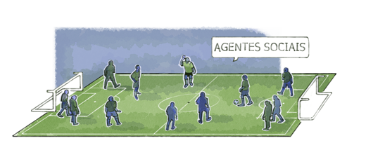
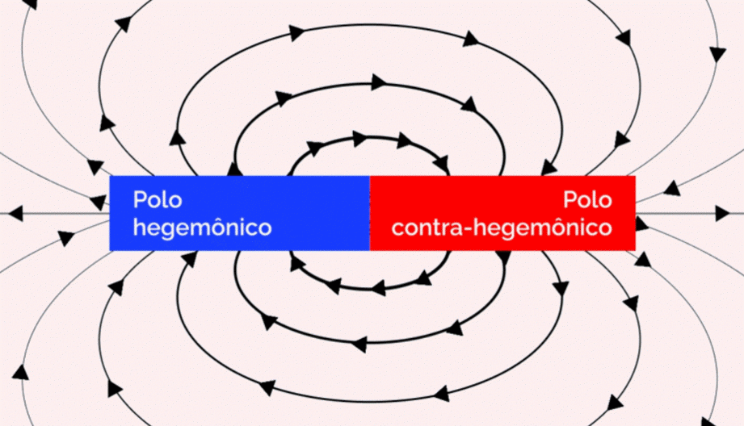

Campo social e hegemonia
O sociólogo francês Pierre Bourdieu elaborou a Teoria do Campo Social a partir da análise de pesquisas empíricas, a fim de compreender os sentidos das ações humanas dos diferentes sujeitos sociais e das relações de tais ações entre si. A perspectiva de análise dessa teoria é fecunda para compreender, intervir e, em particular, revelar aos agentes sociais não hegemônicos o que está implicado nas definições das políticas públicas relativas àquele campo específico.
Os diversos espaços sociais não são idênticos e aqueles que se tornam autônomos são chamados de campos: jurídico, científico, artístico etc. Em cada um deles, observam-se regras gerais (válidas para todos os campos) e específicas, que facilitam ou dificultam a ascensão e/ou a permanência de determinados grupos no controle do campo. Assim, esse processo faz com que se construa um espaço social em permanente conflito, onde a cada momento há tensões e negociações; enquanto as ações se modificam, alianças se formam e se desfazem. Entretanto, isso não é aleatório: a grande maioria dos agentes sociais seguem regras (que podem estar escritas ou não), ou seja, “jogam o jogo”.
Podemos fazer uma analogia com o futebol. Mesmo uma criança pequena sabe qual o objetivo do jogo (fazer gols), quem atua (os jogadores) e algumas regras básicas (não pegar as bolas com as mãos, não bater no adversário, entre outras). Se forem perguntadas: “mais alguém participa do jogo?”, algumas poucas crianças podem citar o juiz, mas fica por aí. Um número maior pode citar a posição dos jogadores (centroavante, meio-campo, goleiro etc.).

Título: Campo social
Fonte: Prosa (2025b).
Entretanto, o futebol é mais complexo que isso e o jogo acontece dentro e fora do campo. No gramado, além das diferenças salariais entre os times (e dentro do próprio time), existem jogadores com papéis e status diferentes, existem os reservas, o treinador e a sua equipe. Também existem os trabalhadores desempenhando muitos outros papéis: gandulas, bandeirinhas, seguranças, equipe médica, bilheteria, limpeza, cinegrafistas, fotógrafos, jornalistas, entre tantos outros profissionais. E, é claro, espectadores, pagantes ou não, torcedores individuais ou organizados.
Fora do gramado, um grande mercado se conecta com o jogo: passes, apostas, propagandas, direitos de transmissão, produção e venda de camisas, souvenirs etc. Aliás, os trabalhadores precários, como motoristas de aplicativo e vendedores de água, de churrasquinho, de camisas e de bonecos não autorizados, também constituem presença forte nesses eventos esportivos. Desse modo, tudo isso é controlado, em primeira instância, pelos donos dos times ou seus representantes, com forte participação dos grandes meios de comunicação. Cada sujeito social, individual ou coletivo, possui capital e o utiliza para interagir nessa dinâmica. O mais óbvio de todos é o econômico: comprar ingressos, passes de jogadores, times e até o juiz!
Bourdieu identificou que o capital se apresenta de diversas formas e que sua distinção é fundamental para entender as relações sociais e de poder:
- Capital econômico: refere-se aos recursos materiais, como renda e propriedades, que podem ser utilizados para obter vantagens sociais.
- Capital cultural: compreende o conhecimento e as habilidades adquiridos e valorizados socialmente, incluindo diplomas e educação formal. No caso do futebol, as habilidades dos jogadores fazerem gols, boas defesas, desarmes e dribles são exemplos de capital cultural.
- Capital social: relaciona-se às redes de relações sociais que um indivíduo possui, permitindo o acesso a recursos e oportunidades, como empregos e prestígio. No futebol, a habilidade do jogador e a sua relação com os treinadores e dirigentes cria oportunidades dentro e fora do campo, por meio de patrocínios e propagandas.
- Capital simbólico: refere-se ao prestígio, à honra e ao status que um indivíduo ou grupo pode ter na sociedade, influenciando a forma como é tratado socialmente. Determinados jogadores são verdadeiras celebridades, com fã-clubes e seguidores nas redes sociais, enquanto a maioria passa despercebida.
Essas formas de capital interagem entre si e são essenciais para a análise das desigualdades sociais e das dinâmicas de dominação em diferentes contextos. A acumulação e a convergência entre esses capitais desempenham um papel crucial na manutenção das hierarquias sociais.
Entre os agentes citados, podemos distinguir os protagonistas, os coadjuvantes e os figurantes. Cada um tem uma quantidade de capital diferente, ou seja, são mais ou menos influentes. No caso de jogadores e times, quem faz mais gols, quem está melhor posicionado no campeonato, quem atrai mais público caracteriza-se como o protagonista do time.
Também pode ser observado que quem controla o jogo estabelece regras e atua no sentido de manter o jogo como ele é, só mudando quando for favorável para si. Estes grupos com tal poder, constituem o polo hegemônico do campo. O outro polo, o não hegemônico, pode ter grupos passivos – que aceitam a situação como está – ou ativos – que questionam e/ou transgridem as regras e, com isso, tornam-se contra-hegemônicos. Cada grupo tem uma ideia de como o campo funciona, a maioria de forma parcial. Logo, quanto mais poder um grupo possui, mais conhecimento ele detém sobre as regras do campo e a forma de controlá-las. Isso pode ser usado para de modo a gerar violências simbólicas, que podem caracterizar-se, por exemplo, pelo racismo, pela misoginia e pela LGBTfobia, reforçando crenças de que o futebol só pode ser praticado ou apreciado por homens brancos heterossexuais.

Título: Polos do campo social
Fonte: Prosa (2025c).
Para complicar mais ainda, agentes semelhantes podem ter uma atuação diversa na defesa dos seus interesses pessoais. É o caso dos jogadores, os quais tornam-se suporte do polo hegemônico e se beneficiam disso com seus altos salários (e depois tornam-se eles mesmos os empresários) e os que se posicionam, como o saudoso jogador brasileiro e tantos outros, pela democratização do futebol.
Em resumo, as regras gerais dos campos sociais são:
- A autonomia de um campo é relativa, ele está sempre conectado a outros campos e à luta geral na sociedade. Um exemplo é a ascensão recente do futebol feminino, que é reflexo da luta das mulheres pelo seu reconhecimento e emancipação.
- Os agentes sociais, para estarem no campo, consentem (consciente ou inconscientemente) com suas regras, tendo suas ações determinadas por elas. Entretanto, tal determinação não é absoluta, há possibilidade de superá-las, jogando com e contra as regras, simultaneamente.
- As diferentes formas de capital podem ser convertidas entre si, por meio de mediações. Por exemplo, uma pessoa dominante pode adquirir status e construir relações (capital social) ou títulos e obras de arte (capital cultural) utilizando recursos financeiros (capital econômico). Já os subalternos adquirem, por esforço próprio, da família e dos educadores, capital social e cultural principalmente na comunidade, na escola e em outros espaços públicos.
- O uso sistemático da violência simbólica, forma de dominação que não se manifesta fisicamente, mas através da imposição de símbolos, normas e significados, é exercido por meio da linguagem e de representações culturais, beneficiando aqueles que a praticam, enquanto prejudica grupos subalternos. Essa violência é uma força sutil e invisível nas relações sociais e culturais, onde normas e valores da classe dominante são apresentados como padrões universais, que cria hierarquias e marginaliza identidades e práticas que não se alinham a esses padrões. A imposição ocorre frequentemente por meio de processos de socialização, educação e mídia, levando as pessoas a internalizarem essas normas sem questionar.
Você deve estar se perguntando: o que isso tem a ver com a EPT? Bem, se você não quer ser um mero figurante, cujas ações são pré-determinadas, e quer fazer a diferença em prol das classes subalternas, é necessário compreender os interesses e as formas de ação de cada agente. É o que veremos nos itens seguintes deste capítulo.